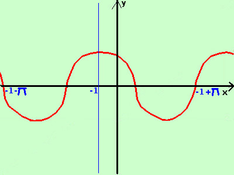

|
sviluppo Data la seguente funzione costruitene approssimativamente il grafico y = cos|x + 1| per semplicita', essendo il coseno una funzione periodica, consideriamo la prima derminazione della funzione coseno da -π a +π Per ottenere l'intervallo poniamo x+1 = -π → x = -1-π x+1 = +π → x = -1+π quindi lavoriamo nell'intervallo -1-π; -1+π poi ripeteremo il grafico negli intervalli adiacenti ricordo che π vale circa 3,14 unita' del piano, quindi grosso modo disegneremo da -4.14 a 2,14 Non coinvolgendo il modulo tutta la funzione utilizzo la definizione di modulo ed ottengo 
Quindi in tutto l'intervallo -1 -π ≥x> -1+π disegno y= cos(x+1) Disegno la curva (in rosso) e la ripeto per intervalli di ampiezza 2π Da notare che, se il modulo coinvolge l'argomento x+1 di una funzione, allora il grafico e' simmetrico rispetto ad un asse verticale, in questo caso l'asse e' la retta x=-1 |